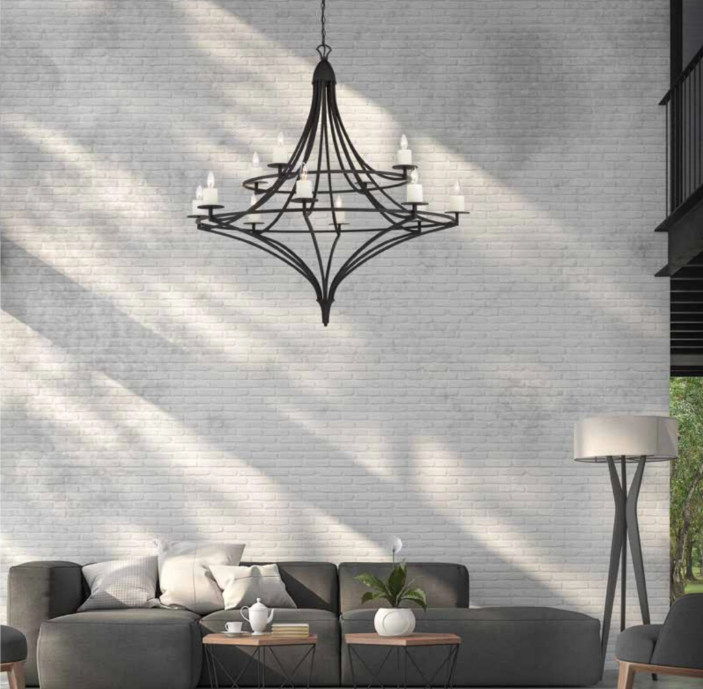
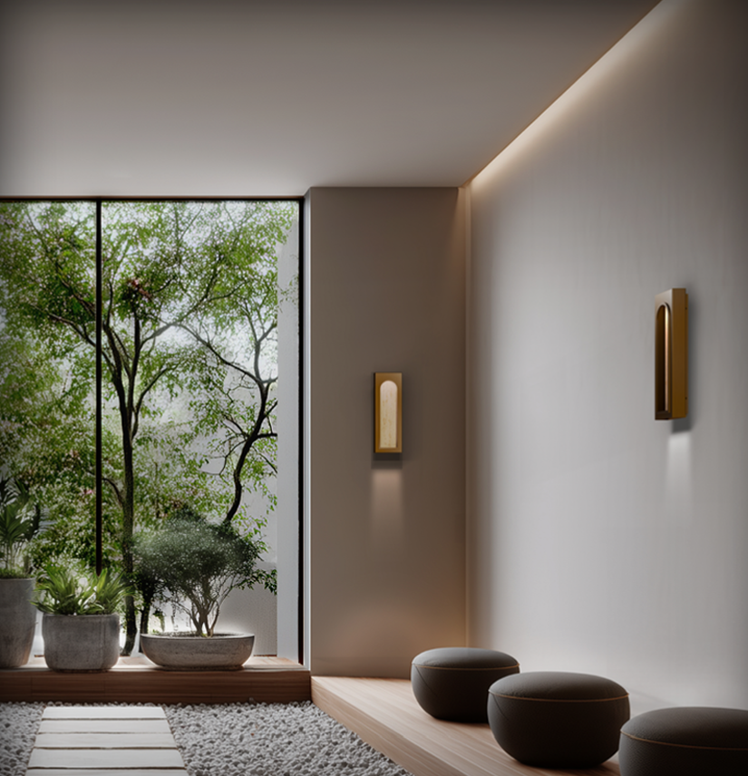
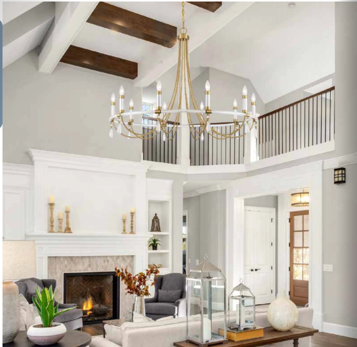

You know the feeling: a living room lit by one overhead fixture at full blast — flat, harsh, and about as cozy as a waiting room. Or the opposite: a single sad table lamp fighting the dark. The difference between those rooms and the living rooms you see in design magazines isn't more expensive furniture — it's layered light. Designers never light a room from one source; they build three layers that work together. Here's the complete system, straight from how professionals plan it, in plain language you can apply this weekend.
The Short Answer
Why One Light Source Always Fails
Lighting professionals put it simply: a room lit with one type of light at one intensity has no depth. Your eye reads brightness contrast as dimension — bright pools, mid glows, and soft shadows are what make a room feel layered and alive. One ceiling fixture blasting evenly downward erases all of that, and it commits a second sin designers call the "cave effect": when all light points straight down, the walls go dark, and dark walls make a room feel smaller. The fix isn't a brighter bulb. It's layers.
Flat light, dark walls, harsh shadows — the cave effect.
Multiple heights, wall glow, depth and warmth.
The Three Layers, Defined
The general, room-filling glow that lets you move around comfortably. Sources: a central chandelier, semi-flush, or pendant; recessed downlights on dimmers; torchiere floor lamps bouncing light off the ceiling; cove lighting; and daylight from windows. Ambient light should be soft and even — think of it as the canvas, not the picture.
Focused, brighter light exactly where activities happen: a floor lamp beside the reading chair, table lamps flanking the sofa, a swing-arm sconce by the game table. List what happens in your living room — reading, board games, laptop work — and give each activity its own light positioned close to the user, not overhead.
Directional light that highlights what deserves attention: art, a fireplace, built-in shelves, plants, a textured wall. Sconces, picture lights, small spotlights, LED strips inside bookcases. Use a narrow beam (roughly 15–30°) and make the accent about three times brighter than ambient — the classic guideline.
Some designers count a fourth layer — decorative — fixtures chosen partly as sculpture: a statement chandelier, a beautiful lamp. In practice, decorative overlaps the other three; a gorgeous fixture can carry ambient duty and be the room's jewelry at once. The same ambient / task / accent framework applies to your home's exterior — see our outdoor lighting guide for the exterior sibling of this system.



The Recipe: Building Your Living Room, Layer by Layer
- Start with ambient, on a dimmer. A central fixture (chandelier or semi-flush) or recessed lights sets your base. Target warm 2700K–3000K everywhere — warmer temperatures are the living room standard. For total output, a typical living room wants roughly 1,500–3,000 lumens across all sources.
- Add task light at seat level. Aim for light at multiple heights, not just the ceiling. A floor lamp at the reading chair and one or two table lamps around the seating group instantly add the mid-level layer most living rooms are missing.
- Finish with one or two accent moves. Sconces flanking the fireplace, a picture light over your favorite art, or LED strips washing the bookshelves. Lighting a wall or built-ins is the single fastest cure for a flat-feeling room.
- Control each layer separately. Put ambient, task, and accent on their own switches — all dimmable. With three zones, one room becomes many: everything up for cleaning; ambient low + lamps mid for conversation; ambient nearly off + one lamp + shelf lights for movie night.
A Worked Example
A 14' × 18' living room, done in one pass:
- Ambient: a 28–32" chandelier or semi-flush, centered, dimmable — see our chandelier sizing guide for the diameter math — or recessed cans dimmed to a soft base.
- Task: a floor lamp beside the reading chair; a pair of table lamps on the console or end tables.
- Accent: two sconces flanking the fireplace; an LED strip or puck lights inside the built-ins.
- Controls: three dimmer zones — ceiling, lamps (smart plugs make lamps one-tap), accents.
Total: six light points, three zones, and a room that can shift from bright and social to low and cinematic without a single new fixture. Coordinate finishes across layers with our finish mixing guide. The same layering framework applies in kitchens — see our kitchen lighting count guide.
Common Mistakes
- The Big One overhead, alone. One bright ceiling source = flat light, dark walls, harsh shadows on faces. Always support it with lamps and accents.
- All downlights, no wall light. Recessed-only rooms feel like caves; add sconces, a wall wash, or shelf lighting to brighten vertical surfaces.
- Everything at one height. Ceiling-only or lamp-only both fall short; layer heights — high (ceiling), mid (sconces, lamps), low (shelf/floor accents).
- No dimmers. A single fixed brightness gives you one mood forever. Dimmers are the cheapest transformation in lighting.
- Mixed color temperatures. One 4000K bulb in a 2700K room sticks out instantly. One temperature per room, always — see our bulb guide.
- Glare and exposed bulbs at eye level. Use shades and diffusers, position task lights so bulbs aren't visible from seating.
- A lonely accent. One spotlight in an otherwise unlit corner looks accidental; accents work as a supporting cast, not a solo.
Quick Answers
What are the three types of lighting in a living room?
Ambient (general room light), task (focused light for activities like reading), and accent (directional light highlighting art or architecture). Designed rooms use all three.
How many lamps or lights should a living room have?
Three to five sources is the sweet spot for most living rooms: one ceiling fixture, one or two floor/table lamps, plus one or two accent lights.
What color temperature is best for living rooms?
2700K–3000K warm white, consistent across every bulb in the room, all dimmable.
How do I make my living room lighting less harsh?
Dim the overhead, add lamps at seat level so light comes from multiple heights, put light on the walls (sconces or shelf lighting), and use shades or diffusers to hide bare bulbs.
How bright should living room lighting be?
Around 1,500–3,000 total lumens across all sources for an average room — but layered and dimmable matters more than the total.
Do I need an electrician to layer my lighting?
Not necessarily. Plug-in floor lamps, table lamps, plug-in sconces, and battery or plug-in picture lights can build all three layers with zero wiring; smart bulbs and plugs handle the zone control.
Ready to shop?
The fastest way to a layered living room is a coordinated set: our Visual Comfort, Hinkley, and Hubbardton Forge collections include matching chandeliers, sconces, and lamps so your layers speak the same design language. Browse our Living Room edit — or send our specialists a photo of your room and we'll suggest a three-layer plan, free.